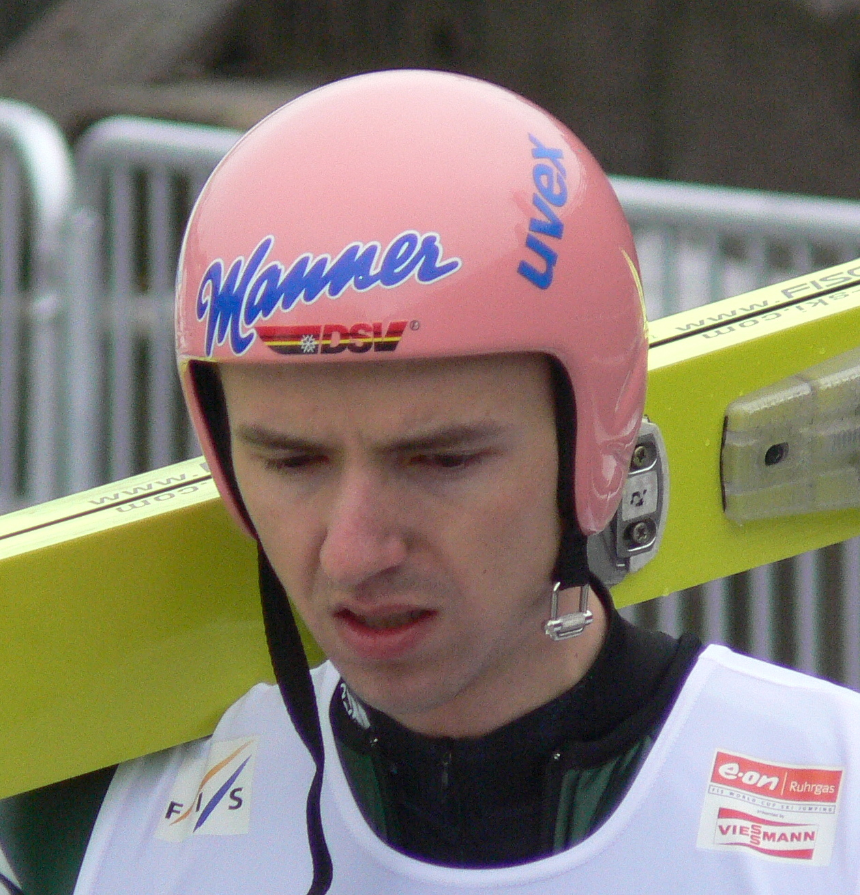

|
Georg Späth (Oberstdorf, 24 de febrero de 1981) es un deportista alemán que
compitió en salto en esquí.
Ganó una medalla de plata en el Campeonato Mundial de Esquí Nórdico de 2005,
en la prueba de trampolín normal por equipos. Participó en los Juegos Olímpicos de Turín 2006, ocupando el cuarto lugar en la prueba por equipos.
Palmarés internacional
Referencias
- «Georg Späth» .
Federación Internacional de Esquí (en inglés). Consultado el 27 de abril de 2024.
- «Georg Späth» .
olympedia.org (en inglés). Consultado el 27 de abril de 2024.
|
Georg Späth |
|  |
| Datos personales |
| Nacimiento |
Oberstdorf, RFA |
| 24 de febrero de 1981 (44 años) |
| Carrera Deportiva |
| Representante de Alemania |
Deporte: salto en esquí |
|